For iPhone and iPad
Practise with a plan, not a hunch.
Drumbook is a practice journal for the drum kit. It puts today's practice list together, runs two clocks so you keep to it, gives you the tempo, and remembers what your teacher told you. So that at the end of the week you have more than a feeling — you have a record.
- Everything stays on your device
- No account, no sign-in
- No tracking, no ads
Since 2 September: Drumbook is running on TestFlight — Apple's way of letting people try an app before it goes on sale. So far with a small circle, so the first bugs don't land on you. The open round of testing comes next, and whoever is on the list gets the link first. Drumbook isn't on the App Store yet.
Why bother
An hour of practice is not an hour of progress.
Sit down at the kit without a plan and you end up playing what already works. The three things that usually go wrong:
"What do I practise today?"
The answer comes from your gut — and your gut prefers the pleasant option. The exercise that's hard keeps slipping through for weeks.
"What did my teacher say again?"
The one sentence that mattered is gone by Wednesday. And the question you meant to ask only comes back to you on the drive home.
"Am I actually getting better?"
Progress on drums is slow and nearly impossible to hear from the inside. Without numbers all you have is a feeling — and it misleads in both directions.
What Drumbook does
Eight things that make a practice session better.
Both hands on the sticks, none to turn the page
Sheet music comes in pages, and a drummer who is playing cannot turn one. So Drumbook cuts the staves out of your PDF and stacks them across the full width — one continuous ribbon instead of separate pages. Page turning stops being a problem, because there are no pages left.
- It finds the staves on its own — by their signature of five evenly spaced lines. That works on printed sheets as well as on photographed ones, and up to about three degrees it straightens a crooked page first.
- Section names, bar numbers and repeat marks stay with the music. Sideways the cut goes out to the last bit of ink rather than to the edge of the paper, and between two staves it lands exactly where nothing is written.
- On an iPad a stave becomes a good two times the size it has on paper, on an iPhone held sideways about one and a half. Held upright it gains no size, but it gains calm: no margins, no page turns, every stave in the same place.
- The screen stays awake while the music is open — otherwise it goes dark in the second bar.
- When the detection isn't sure, it says so and shows the printed page rather than building a ribbon with a stave missing. A switch takes you back to the original page at any time anyway.
And it follows along while you play. You teach it once by tapping through the score to the click — at the table, no sticks, once per piece. From then on Drumbook knows which stave starts on which beat, repeats and jumps included: when the music goes back, you simply tap the stave it goes back to. It is all stored in beats rather than seconds — taught at 90, it still fits at 130.
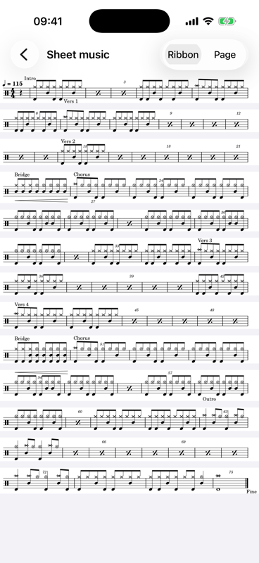
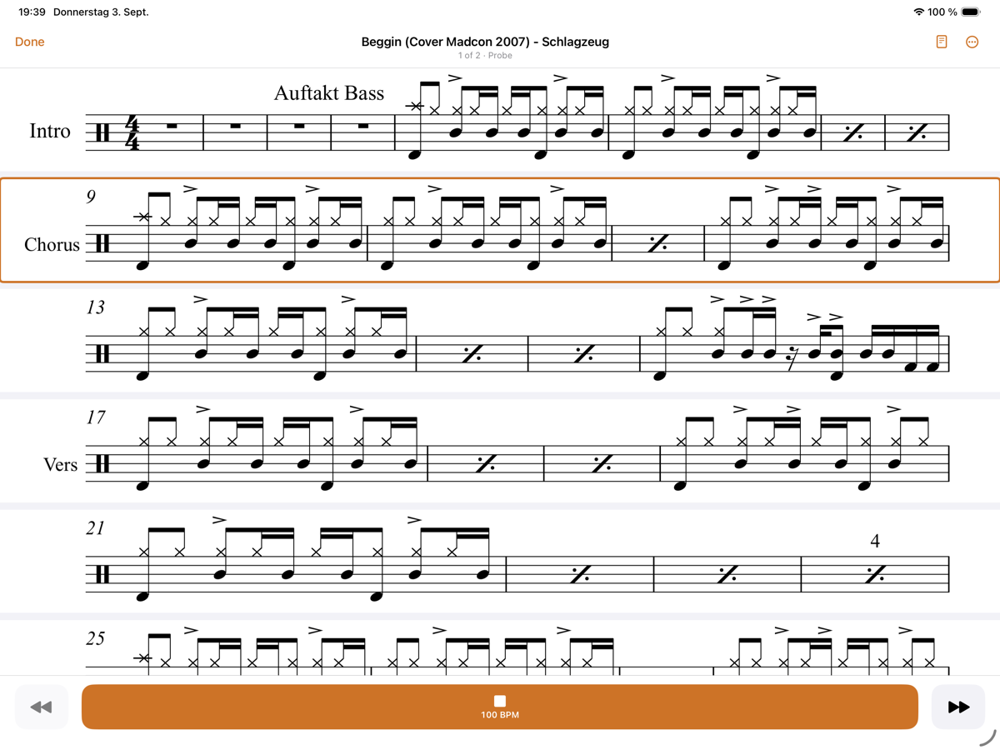
The clock thinks along
A session isn't an alarm, it's a running order. You set how long you have altogether; every exercise gets its own share. Two countdowns run at once: one for the exercise, one for the whole evening.
- It moves on by itself after a short break, with a sound and a tap you can feel — no need to touch the phone.
- Overrunning is allowed. Staying longer on one exercise doesn't steal time from the others — the remaining time counts honestly.
- A quick verdict afterwards: the tempo you reached and a rating per exercise, plus one for the evening.
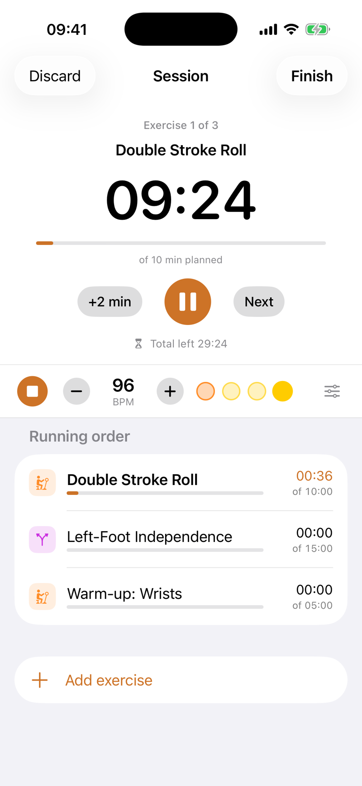
A click that doesn't drift
The metronome writes every beat into the audio ahead of time instead of trusting a timer. That's why it's still where it should be ten minutes in. And every exercise remembers its own setting.
- Every beat on its own: accented, normal or silent. Subdivisions up to sextuplets.
- Tap the tempo, raise it automatically, or stop after a set number of bars.
- Silent bars for timing: the click drops out, you keep playing — and when it returns you hear whether you're still on it.
- Keeps running with the screen locked, and can be worked from there.
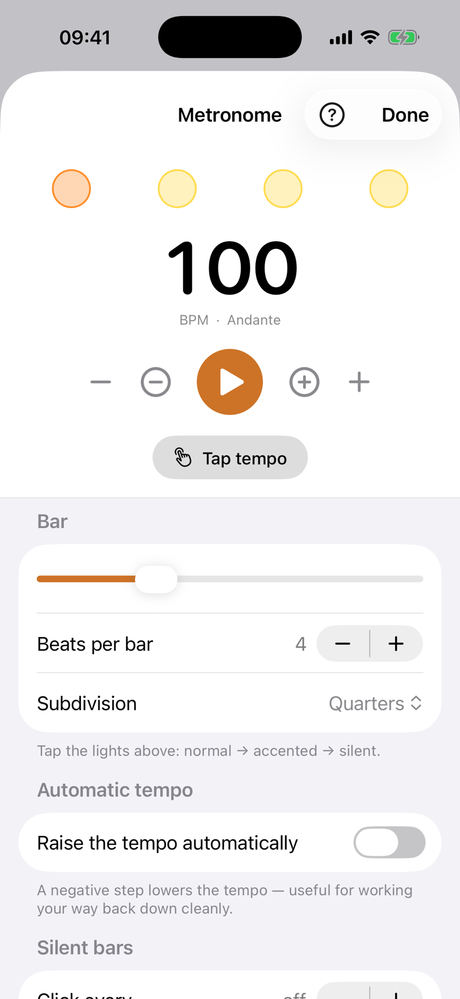
What your teacher said is still there next week
For every lesson you note what it was about and how your teacher judged it. The exercises they set go straight into the library — and the generator knows they take precedence.
- Collect questions the moment they come up while practising. At the next lesson they're at the top of the screen.
- Sheet music with it: photographed, scanned or as a PDF — along with voice notes from the lesson.
- A PDF report shows your teacher what has actually happened since the last lesson.
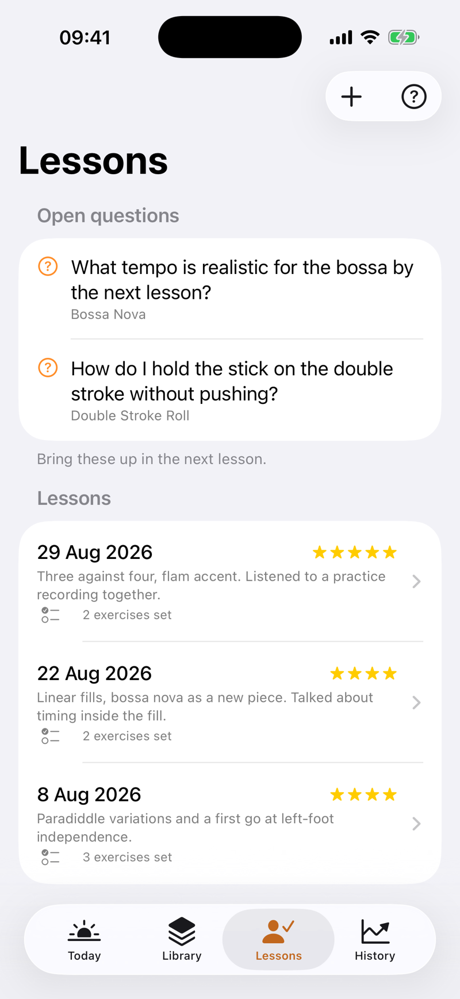
What else is in there
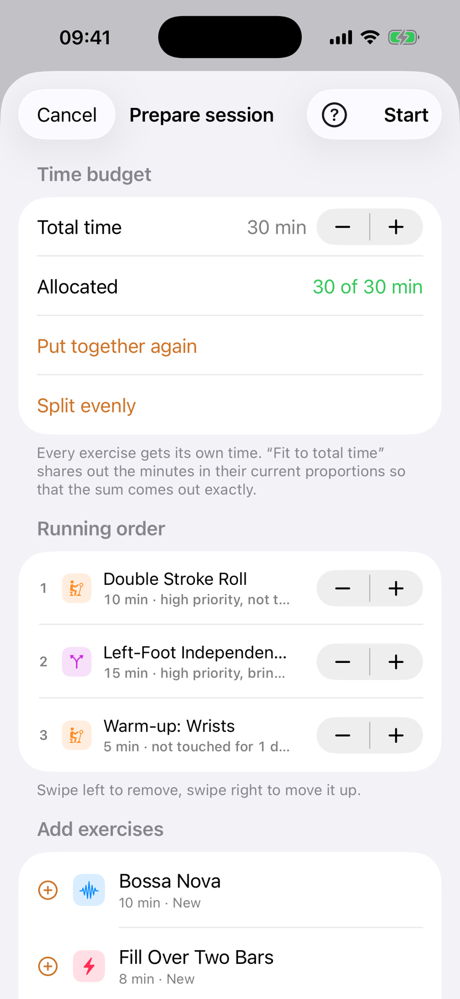
The practice list writes itself
Tell Drumbook how many minutes you have — the generator does the rest. It pulls in what has been left alone too long, makes sure the same topic doesn't come round three times, and lets the important things through first.
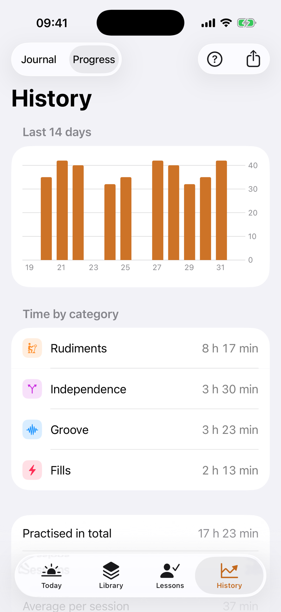
Proof that it's going somewhere
Every session lands in the history. After a few weeks you can see in black and white how much you practised, where the time went, and where the tempo actually rose.
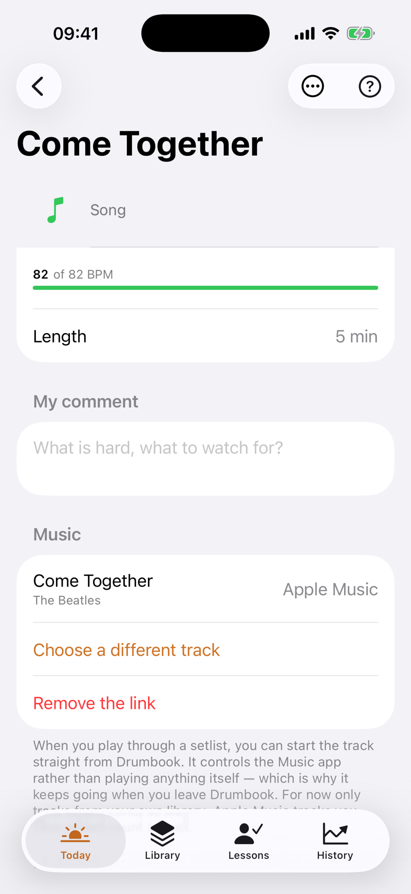
Play along with the original
A song is only really there once it holds up against the record. Attach the actual track to an exercise or a song — from your own library, the Apple Music titles in it included. Playing through a setlist, you start it from inside Drumbook.
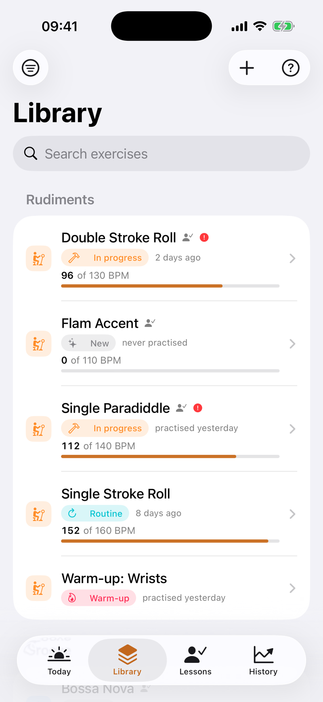
Your exercises, in order
The library holds it all together: what the exercise is for, the tempo you're aiming at, where you stand, when it last came up. Songs are kept apart — they shouldn't flood the practice list.
And besides
The small things that matter day to day.
Material on the exercise
Scan or photograph sheet music, import PDFs, record voice notes, keep links. While you practise it's all one tap away — sheet music as a ribbon, everything else zoomable full screen.
Reminders that fit
Daily at a set time — or only once you've been away from the kit for a number of days you choose yourself. No nagging.
Setlists for rehearsal
Songs in the order of the night, each with its own tempo and its own recording. Played through, the sheet stands large, the buttons are made for hands holding sticks, and the screen stays awake. No clock, no rating — a rehearsal is not a practice session.
Export and backup
A PDF report for your teacher. And a complete backup as a file that can be read back in — with attachments, and without deleting anything in the process.
Pass an exercise on
Send an exercise with its description and settings as a file. The other person reads it in — no account, no server, no invitation.
Help where you are
There's a question mark on every screen. Behind it isn't a manual, but an explanation of exactly what's in front of you.
Biggest on iPad
This is where the extra surface really pays off: a stave becomes a good two times the size it has on paper, and held sideways five or six of them fit on the screen at once. Plus the larger session clock and the content in a readable column, instead of stretching across thirteen inches.
Your data
It all stays here.
Drumbook is an app with no way back out. It has no sign-in, no account and no server connection — not as a setting you can switch, but because none of that is built in. What you practise is nobody else's business.
- Stored on the deviceExercises, sessions, notes and sheet music live inside the app on your iPhone — not in a cloud.
- Nothing is measuredNo analytics, no crash reports to third parties, no advertising identifier. The app doesn't keep score of how you use it.
- No account neededNo password, no email address, no signing in through someone else's service. Install it and go.
- You can leave whenever you likeThe full backup is an open file that belongs to you. There's no hoard of data being kept back.
For drum teachers
They practise at home. You just don't know what.
The honest answer to "so, did you practise?" is usually a shrug. Not because anyone is lying — but because after a week nobody remembers how long, on what, and at which tempo.
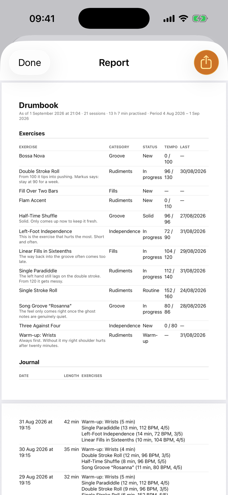
What you hold in your hand at the next lesson
A PDF report the pupil produces with two taps — optionally covering exactly the time since your last lesson. In it is what nobody else knows:
- Every session with date, length and exercise — and for each one the tempo reached, plus how the pupil rated it.
- Current and target tempo side by side: "96 of 130" tells you in one line what ten minutes of asking will not.
- The pupil's own notes — "past 100 it turns into pushing". That is exactly where the lesson starts.
- Songs stay out of it. The report shows what is being practised — not what was played for fun.
What you said survives the week
What you set, the pupil enters after the lesson — along with your assessment. Those exercises go into their library and take precedence when the practice list is put together. The sentence that mattered is still there on Wednesday.
They arrive with questions, not with "erm"
Questions that come up while practising are collected by the app. At the next lesson they sit at the top of the screen. You answer three specific questions instead of opening the lesson with a search.
You have to do nothing at all
No account, no setup, no teacher edition, no training. You recommend the app — the pupil does the rest. If you like, send them an exercise as a file; one tap reads it in, with description and tempo.
No data protection headache
Anyone teaching minors thinks twice about which platform to recommend. Here there is no sign-in, no server and no pupil data on your side — everything stays on the pupil's device. You get a PDF, nothing else.
What Drumbook is not: not a teaching platform, not a register, not a portal with pupil management. There is no shared account and no overview across several pupils — that would be an entirely different app. What Drumbook does is turn one pupil into someone who knows what they practised.
Where it stands
What's finished — and what isn't.
Drumbook is a project out of a rehearsal room, not a company's product. So here is an honest account of where it is.
Working and in daily use
- Library, sessions with a running order and two clocks
- Metronome, including with the screen locked
- Lessons, questions for the teacher, history with a chart
- Material, reminders, setlists, practice-list generator
- The ribbon: the staves from your PDF, stacked across the full width
- Tap through the score once to the click — after that the ribbon follows along
- PDF report, full backup with restore
- Linking tracks from your library and playing them while you practise
- Runs on iPhone and iPad, upright and sideways, in English and in German
- The first test build on TestFlight, since 2 September
Still to come
- The route to the App Store — until then TestFlight is the only way in
- The open round of testing for everyone on the list — Apple has to review it first
- Having the ribbon follow along without a click — with the click it has done so since 3 September
- Split View alongside another app on iPad
- The Android version — it is coming, but after iPhone and iPad
- The Apple Music catalogue and Spotify — for now only what is in your own library
- Syncing between several devices — later, if at all
Questions
What people want to know.
Can I use Drumbook already?
Almost. Since 2 September Drumbook has been running on TestFlight, but only with a small circle for now. Apple has to review the open round first — that takes a day or two once it's been submitted. Leave your address and you'll get the link as soon as it's ready — and no other post.
What will it cost?
Drumbook will be a subscription — likely between three and five euros a month, with a distinctly cheaper yearly price. Before that you can try it properly: everyone gets a trial period, no strings attached. There will be no advertising.
Does the subscription include everything?
Every last bit. There is no edition where the generator is missing, the metronome does less, or the number of exercises is capped. If you pay, you get all of it — and if you are trying it out, you try all of it too. A practice journal that asks for money at the interesting moment would not be one.
Does Drumbook run on iPad?
Yes, fully — and not as a blown-up iPhone app. Everything has been played through once on a 13" iPad Pro: practice sessions, the metronome, material, the report for your teacher, sharing and receiving exercises. The content sits in a readable column rather than stretching the full width, and the session clock grows, because an iPad stands further away than a phone.
The real reason for an iPad, though, is the ribbon: a stave becomes a good two times the size it has on paper there, and held sideways five or six of them fit on the screen. On a music stand that is the difference between reading and guessing.
Upright and sideways, both tested. What is missing is Split View alongside another app. And because all the data stays on the device, your iPhone and your iPad keep separate journals — the backup is how you move between them.
Is there an Android version?
Yes, it is planned. iPhone and iPad come first — that is where the app runs every day today. Android follows; there is no date for it yet. The tricky part is the metronome: a click that does not drift is its own piece of work on every platform.
Do I need a drum teacher for this?
No. The lessons part is an offer, not a requirement. If you practise alone you use the library, sessions, metronome and history just the same — that section simply stays empty.
What happens to my data if my phone breaks?
That's what the backup is for: a single file with everything in it, sheet music and voice notes included. Put it wherever you keep your backups and read it in on the new device. Reading it in merges; it doesn't overwrite.
Can my teacher use the app too?
There's no shared teacher-and-pupil account — that would be a different app altogether. What there is: the PDF report you send your teacher, and single exercises that can be passed on as a file.
Can a metronome even be heard over a drum kit?
Through a phone's speaker: no, not reliably. At the kit you need headphones. Drumbook knows this — if the headphones are pulled out mid-session it stops rather than suddenly clicking through the speaker.
Who is behind it?
One person who is learning the drums and built the app for himself first. Every feature exists because something was missing while practising — not because it looks good on a comparison chart.
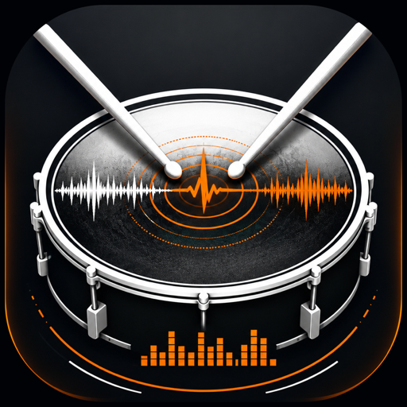
Be part of the test.
You'll hear from me exactly once — when the open round of testing starts and you can install Drumbook from TestFlight. No newsletter, nothing in between.
Opens your email app with the text ready. If that doesn't work for you, just write to silvio@drumbook.de yourself.
Your address is used only to send you that one message — and deleted afterwards.